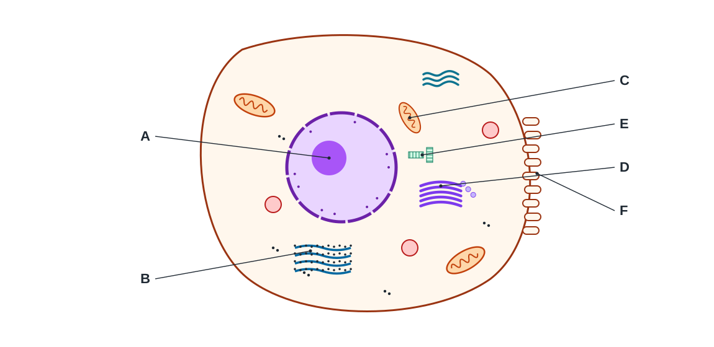

Topic questions
Original questions in the style of Paper 1 (multiple choice) and Paper 2 (AS structured questions), with mark schemes. Answer on screen, or print for class.
Section A: Paper 1 style
Choose one answer for each question. Then press Mark my answers.
What is the approximate limit of resolution of a light microscope?
Answer: C. Resolution of a light microscope is about 200 nm (half the wavelength of visible light).
Why does a transmission electron microscope have a better resolution than a light microscope?
Answer: D. Resolution depends on wavelength; electron beams have a much shorter wavelength.
An image of a cell is 45 mm long. The magnification is ×1500. What is the actual length of the cell?
Answer: B. 45 mm = 45 000 µm; 45 000 ÷ 1500 = 30 µm.
A scale bar 15 mm long on a micrograph represents 3 µm. What is the magnification?
Answer: B. 15 mm = 15 000 µm; 15 000 ÷ 3 = ×5000.
When an eyepiece graticule is calibrated, 25 graticule units match 100 µm on the stage micrometer. A cell is 12 graticule units long. What is its length?
Answer: D. 1 unit = 100 ÷ 25 = 4 µm; 12 × 4 = 48 µm.
Why must the eyepiece graticule be recalibrated when the objective lens is changed?
Answer: C. The graticule stays the same size but the specimen is magnified more, so each division represents a different length.
Which structures are found in both prokaryotic and eukaryotic cells?
Answer: D. All cells have a cell surface membrane and ribosomes (70S in prokaryotes).
Which organelle is surrounded by a double membrane and contains 70S ribosomes and circular DNA?
Answer: D. Mitochondria (and chloroplasts) have envelopes, 70S ribosomes and circular DNA.
What is the function of the nucleolus?
Answer: C. The nucleolus makes rRNA and assembles ribosome subunits.
Which describes the smooth endoplasmic reticulum?
Answer: A. SER has no ribosomes and synthesises lipids and steroids.
Which pathway is taken by a protein that is secreted from a cell?
Answer: B. Made on RER, carried by vesicle to the Golgi, then a secretory vesicle fuses with the membrane (exocytosis).
What is the role of centrioles?
Answer: B. Centrioles organise the spindle during nuclear division in animal cells.
Which structures are found in a typical plant cell but not in a typical animal cell?
Answer: A. Chloroplasts, a cellulose wall, plasmodesmata and a large permanent vacuole are plant features.
What is the tonoplast?
Answer: A. The tonoplast surrounds the vacuole in plant cells.
Which statement about ATP is correct?
Answer: B. ATP is the universal energy currency; made by respiration in mitochondria and in photosynthesis in chloroplasts.
What is the typical diameter of a prokaryotic cell?
Answer: B. Prokaryotes are typically 0.5–5 µm across.
What is the cell wall of a bacterium made of?
Answer: B. Bacterial cell walls are made of peptidoglycan.
Which feature is found in viruses?
Answer: A. Viruses have nucleic acid inside a protein capsid; they have no cytoplasm or ribosomes.
Which size order is correct, from smallest to largest?
Answer: A. Ribosome ≈ 25 nm, virus ≈ 100 nm, bacterium ≈ 1–5 µm, nucleus ≈ 10 µm.
Which structure would be visible with a light microscope but whose internal detail can only be seen with an electron microscope?
Answer: C. Mitochondria (about 1 µm) can be seen with a light microscope, but cristae need an electron microscope.
Answer key
1 C · 2 D · 3 B · 4 B · 5 D · 6 C · 7 D · 8 D · 9 C · 10 A · 11 B · 12 B · 13 A · 14 A · 15 B · 16 B · 17 B · 18 A · 19 A · 20 C
Section B: Paper 2 style
Write your answers in your exercise book, then check against the mark scheme.
Question 1 [10 marks]
The diagram shows an animal cell as seen with an electron microscope.

- Identify structures A, B, C and D. [4]
- State the letter of the structure that:
- organises the spindle during nuclear division [1]
- increases the surface area of the cell for absorption. [1]
- Explain why the detail shown in the diagram could not be seen with a light microscope. [2]
- Structure C produces ATP. Outline the role of ATP in cells. [2]
Show mark scheme
- (a) A nucleolus; B rough endoplasmic reticulum / RER; C mitochondrion; D Golgi body / apparatus [4]
- (b)(i) E [1]; (ii) F [1]
- (c) light microscope resolution about 200 nm / limited by wavelength of light; electron microscope has higher resolution (about 0.5 nm) because electrons have shorter wavelength; structures such as ribosomes / membranes are smaller than 200 nm [max 2]
- (d) universal energy currency; energy released when ATP is hydrolysed (to ADP + Pi); used for named process, e.g. active transport, muscle contraction, protein synthesis [max 2]
Question 2 [9 marks]
- A mitochondrion measures 36 mm long on an electron micrograph magnified ×12 000. Calculate the actual length of the mitochondrion in µm. Show your working. [2]
- On another micrograph, a scale bar 20 mm long represents 5 µm. Calculate the magnification. [2]
- A student calibrated an eyepiece graticule. 40 graticule units lined up with 0.1 mm on the stage micrometer. A cheek cell measured 18 graticule units. Calculate the length of the cheek cell in µm. [3]
- Explain why using a light microscope at a magnification of ×1 500 000 would not show any more detail than at ×1500. [2]
Show mark scheme
- (a) 36 mm = 36 000 µm; 36 000 ÷ 12 000 = 3 µm [2] (1 mark for correct conversion or method if answer wrong)
- (b) 20 mm = 20 000 µm; 20 000 ÷ 5 = ×4000 [2]
- (c) 0.1 mm = 100 µm; 1 graticule unit = 100 ÷ 40 = 2.5 µm; 18 × 2.5 = 45 µm [3]
- (d) resolution is limited (to about 200 nm) by the wavelength of light; points closer than this cannot be distinguished; image is bigger but blurred / no more detail [max 2]
Question 3 [9 marks]
- Describe four ways in which the structure of a prokaryotic cell differs from that of a eukaryotic cell. [4]
- Describe the structure of a virus. [3]
- Explain why viruses are described as non-cellular. [2]
Show mark scheme
- (a) prokaryote has no nucleus / DNA free in cytoplasm (nucleoid); DNA circular (not linear) and not associated with histones / no chromosomes; no membrane-bound organelles, e.g. no mitochondria, ER, Golgi; 70S ribosomes (eukaryote cytoplasm 80S); cell wall of peptidoglycan / murein (not cellulose or chitin); may have plasmids / capsule / pili / flagellum of different structure; smaller, 0.5–5 µm (eukaryote 10–100 µm) [max 4]
- (b) nucleic acid, DNA or RNA; surrounded by a protein coat / capsid; made of capsomeres; some have a (phospholipid) envelope (from host cell membrane); with glycoproteins [max 3]
- (c) no cytoplasm / no ribosomes / no cell surface membrane of their own / no metabolism; can only reproduce inside a host cell [max 2]
Question 4 [9 marks]
Pancreatic cells make and secrete digestive enzymes.
- Describe the roles of the nucleus, rough endoplasmic reticulum, Golgi body and vesicles in the production and secretion of an enzyme. [5]
- Pancreatic cells contain many mitochondria. Suggest why. [2]
- Describe the structure and function of a lysosome. [2]
Show mark scheme
- (a) nucleus contains the gene / DNA coding for the enzyme; mRNA made (transcription) and leaves through nuclear pores; ribosomes on RER make the polypeptide / protein; protein transported through RER cisternae; vesicles carry it to the Golgi body; Golgi modifies (e.g. adds carbohydrate) and packages it; secretory vesicles move to and fuse with cell surface membrane; exocytosis [max 5]
- (b) to make (much) ATP / aerobic respiration; energy needed for protein synthesis / exocytosis / vesicle movement [2]
- (c) spherical sac with single membrane; contains hydrolytic / digestive enzymes; digests old organelles / material taken in by endocytosis [max 2]
These are original practice questions written for this site. For official Cambridge past papers on this topic, see the chapter page.